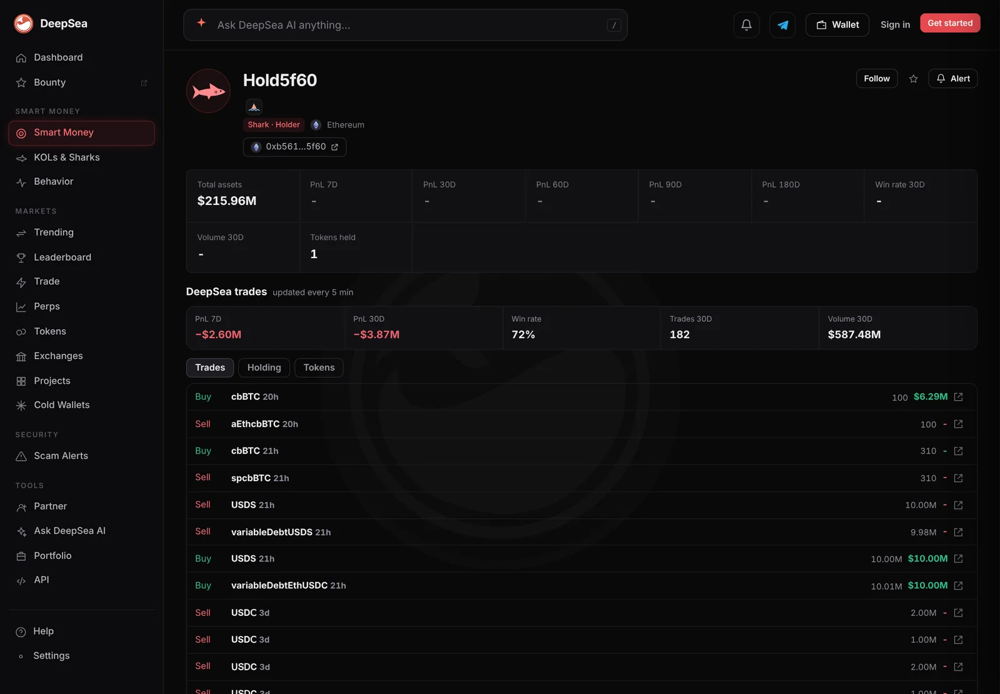

A shark's $45.9 million 'buy' was a loan swap that freed 410 cbBTC from Aave and Spark
DeepSea logged a shark wallet's $25.87 million of cbBTC as a buy while bitcoin slid toward $60,000. Blockscout shows no purchase. The wallet refinanced a $10 million loan and pulled its own bitcoin collateral back.
Key points
- DeepSea's 24-hour table shows the wallet ending in 5f60 with $45.87 million bought and $10.01 million sold in 5 trades, including $25.87 million of cbBTC (Coinbase's wrapped bitcoin).
- Blockscout shows what happened at 9:36 a.m. ET on November 23: the wallet borrowed 10 million USDC on Aave, swapped it for 10 million USDS through Spark, and repaid a 10 million USDS loan on Spark.
- It then withdrew 310 cbBTC from Spark and 100 cbBTC from Aave, 410 coins in all. No cbBTC was bought on a market.
 What DeepSea's data shows
What DeepSea's data shows
DeepSea's 24-hour flow table, built at 6:34 a.m. ET on November 24, lists the shark wallet ending in 5f60 with $45.87 million bought and $10.01 million sold in 5 trades. Only three Ethereum shark wallets in the table traded more.
Three token lines carry it. One wallet bought $25.87 million of cbBTC, the bitcoin token issued by Coinbase. One wallet took in $10 million of variableDebtEthUSDC, the token Aave mints to record a USDC loan. The rest is stablecoins.
The wallet's DeepSea page, named Hold5f60, shows the detail: 310 and 100 cbBTC logged as buys, the Spark and Aave receipt tokens for the same coins logged as sells.
So DeepSea counts tokens arriving in a wallet as buys. A loan token or collateral coming back from a lending app looks the same as a purchase in that table, which is why we checked the explorer.

Data: DeepSea (desea.io), checked November 24, 2026, 6:34 a.m. ET.
What the explorer shows
Blockscout's transfer list for the wallet shows five steps on Monday, November 23. At 9:36 a.m. ET it borrowed 10 million USDC from Aave v3, and Aave minted the matching debt token. At 9:42 a.m. it sent the 10 million USDC to Spark's USDS PSM wrapper and got 10 million USDS back, a one-to-one swap between two dollar stablecoins.
At 9:44 a.m. it paid the 10 million USDS into Spark, and about 9.98 million of its Spark USDS debt tokens were burned, which means the loan shrank. At 9:47 a.m. it withdrew 310 cbBTC from Spark. At 10:46 a.m. it withdrew 100 cbBTC from Aave.
There is no swap into cbBTC anywhere in the list. The 410 coins were the wallet's own collateral coming home. At CoinGecko's 6:45 a.m. price of $59,736, they are worth about $24.5 million.
Not the first time
The wallet ran the same play on November 19. Blockscout shows an 18 million USDC Aave loan at 2:10 p.m. ET, an 18 million USDS swap at Spark three minutes later, an 18 million USDS repayment to Spark and a 400 cbBTC withdrawal from Spark at 2:16 p.m.
It still has debt at Spark. Its token balances show its Spark USDS loan all but repaid, a Spark debt of 8.0 million RLUSD, Ripple's stablecoin, and 561.54 cbBTC still supplied there. Another 2,608.48 cbBTC sits in the wallet itself. Etherscan says the wallet was first funded from an address it labels Binance 14 and shows no name tag for it.
The moves came as bitcoin fell. CoinGecko had it at $59,906 at 6:45 a.m. ET on November 24, down 2.5% in 24 hours, after a 24-hour high of $64,446 and a low of $59,380 on CoinGecko's market data.
Wallet 5f60, November 23 (ET)
million units
Source: Blockscout token transfers. cbBTC rows in hundreds of coins.

LC Insight analysis
This section is our reading of the facts above, not a statement of fact.
- We think this is a wallet reshuffling its loans, not a bet on bitcoin: it moved a $10 million loan from Spark to Aave and took collateral out of both. Its debt stayed about the same while the bitcoin pledged against it shrank.
- Pulling 410 cbBTC out of lending apps while bitcoin sits near $60,000 leaves the wallet free to sell, move or re-pledge the coins. The explorer does not show which it will do.
- Flow tables that count loan tokens and collateral returns as buys can overstate whale demand. Checking the chain before reading a big number as a purchase matters.
What's next
- Whether the 410 cbBTC leave the wallet, and to where.
- Whether it repays the 8.0 million RLUSD it still owes on Spark.
- Whether bitcoin holds $60,000 after touching $59,380.
Disclaimer. This article is based on public information and the sources listed below as of the update time shown. It is for information only and is not investment, legal or tax advice. Figures may change as companies and authorities publish new data.
Sources
- DeepSea, 24-hour shark flows by token and wallet (built November 24, 2026, 6:34 a.m. ET)
- DeepSea, wallet page Hold5f60 (read November 24, 2026, 6:49 a.m. ET)
- DeepSea, KOLs & Sharks page (read November 24, 2026)
- Blockscout, token transfers of the wallet ending in 5f60 (read November 24, 2026, 6:40 a.m. ET)
- Blockscout, token balances of the wallet ending in 5f60 (read November 24, 2026, 6:42 a.m. ET)
- Etherscan, address ending in 5f60 (read November 24, 2026)
- CoinGecko, BTC, cbBTC and stablecoin prices (November 24, 2026, 6:45 a.m. ET)
- CoinGecko, bitcoin 24-hour high and low (November 24, 2026, 6:45 a.m. ET)